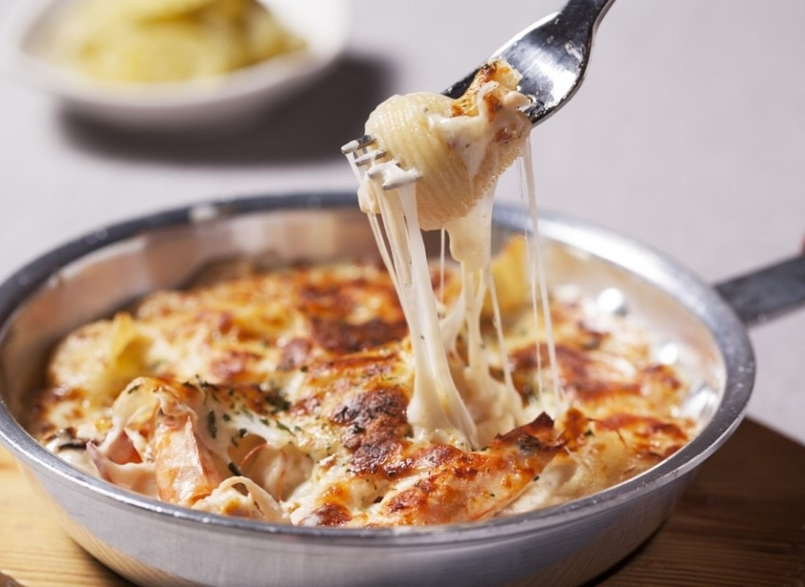

고시촌 미식회
나폴리네

나폴리네는 고시촌에 있는 양식 전문점입니다.
파스타와 피자가 있으며, 세트메뉴로 더 저렴하게 먹을 수 있습니다.
다른 양식 집에 비해 나쁘지 않은 가격을 가지고 있습니다.
물이 셀프이긴 하나 물컵이 커서 자주 이동하지 않아도 됩니다.
피자 같은 경우 옆에서 조리하는 모습을 직접 볼 수 있습니다.
주소 : 서울 관악구 호암로24길 1
고시촌 미식회 별점:
★★★★
▲ 위 사진을 누르시면 나폴리네의 자세한 정보를 보실 수 있습니다.
 고시촌 미식회
고시촌 미식회